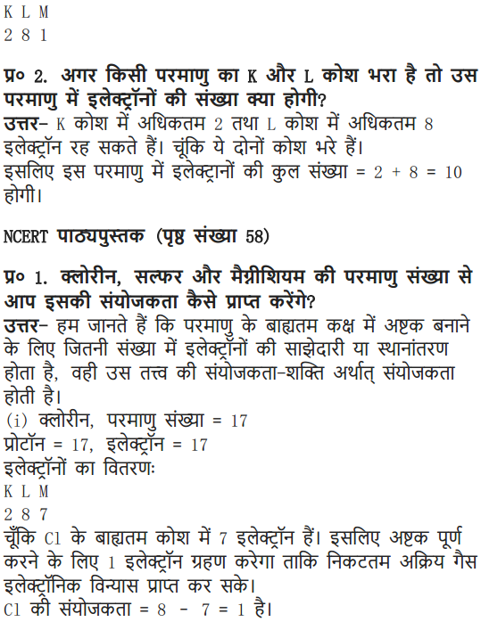
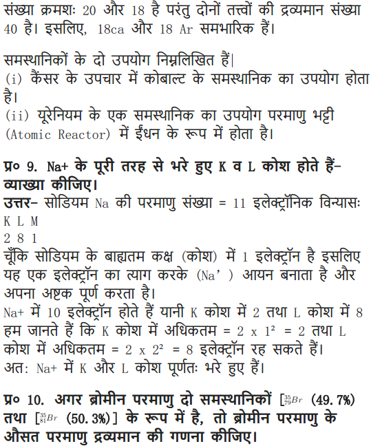

NCERT Solutions Class 9 Science Chapter 4 Structure of the Atom – Here are all the NCERT solutions for Class 9 Science Chapter 4. This solution contains questions, answers, images, step by step explanations of the complete Chapter 4 titled Structure of the Atom of Science taught in class 9. If you are a student of class 9 who is using NCERT Textbook to study Science, then you must come across Chapter 4 Structure of the Atom. After you have studied lesson, you must be looking for answers of its questions. Here you can get complete NCERT Solutions for Class 9 Science Chapter 4 Structure of the Atom in one place. For a better understanding of this chapter, you should also see Chapter 4 Structure of the Atom Class 9 notes , Science.
NCERT Solutions for Class 9 Science Chapter 4 Structure of Atom
Topics and Sub Topics in Class 9 Science Chapter 4 Structure of Atom:
- Structure of Atom
- Charged Particles in Matter
- The Structure of an Atom
- How are Electrons Distributed in Different Orbits (Shells)?
- Valency
- Atomic Number and Mass Number
These solutions are part of NCERT Solutions for Class 9 Science. Here we have given Class 9 NCERT Science Text book Solutions for Chapter 4 Structure of Atom.
In-Text Questions Solved
NCERT Textbook for Class 9 Science – Page 47
Question 1. What are canal rays?
Answer: Canal rays are positively charged radiations which led to the discovery of positively charged sub-atomic particle called proton.
Question 2. If an atom contains one electron and one proton, will it carry any charge or not?
Answer: The atom will be electrically neutral as one – ve charge balances one + ve charge.
More Resources for CBSE Class 9
- NCERT Solutions
- NCERT Solutions Class 9 Maths
- NCERT Solutions Class 9 Social Science
- NCERT Solutions Class 9 English
- NCERT Solutions Class 9 Hindi
- NCERT Solutions Class 9 Sanskrit
- NCERT Solutions Class 9 IT
- RD Sharma Class 9 Solutions
Class 9 Science NCERT Textbook – Page 49
Question 1. On the basis of Thomson’s model of an atom, explain how the atom is neutral as a whole.
Answer: According to Thomson’s model of an atom
(i) An atom consists of a positively charged sphere and the electrons are embedded in it,
(ii) The negative and positive charges are equal in magnitude. So the atom is electrically neutral.
Question 2. On the basis of Rutherford’s model of an atom, which sub-atomic particle is present in the nucleus of an atom?
Answer: As per Rutherford’s model of an atom, the protons which are positively charged are present in the nucleus of an atom.
Formulae Handbook for Class 9 Maths and ScienceEducational Loans in India
Question 3. Draw a sketch of Bohr’s model of an atom with three shells.
Answer:

Question 4. What do you think would be the observation if the a-particle scattering experiment is carried out using a foil of a metal other than gold?
Answer: On using any metal foil, the observations of the a-particle scattering experiment would remain the same as all atoms would have same structure.
Class 9 Science NCERT Textbook – Page 49
Question 1. Name the three sub-atomic particles of an atom.
Answer: The sub-atomic particles of an atom are
Question 2. Helium atom has an atomic mass of 4 u and two protons in its nucleus. How many neutrons does it have?
Answer:
NCERT Textbook for Class 9 Science – Page 50
Question 1. Write the distribution of electrons in carbon and sodium atoms.
Answer:
Question 2. If K and L shells of an atom are full, then what would be the total number of electrons in the atom?
Answer: K shell can hold 2 electrons and L shell can hold 8 electrons.When both the shells are full, there will be (8 + 2) 10 electrons in the atom.
Class 9 Science NCERT Textbook – Page 52
Question 1. How will you find the valency of chlorine, sulphur and magnesium?
Answer:
NCERT Textbook for Class 9 Science – Page 52
Question 1. If number of electrons in an atom is 8 and number of protons is also 8, then
(i) What is the atomic number of the atom? and
(ii) What is the charge on the atom?
Answer:
Question 2. With the help of given Table 4.1, find out the mass number of oxygen and sulphur atom.
Table: Composition of Atoms of the First Eighteen Elements with Electron Distribution in Various Shells

Answer:
NCERT Solutions for Class 9 Science Chapter 4 Textbook – Page 53
Question 1. For the symbol H, D and T tabulate three sub-atomic particles found in each of them
Answer:
Question 2. Write the electronic configuration of any one pair of isotopes and isobar.
Answer. Isotopes: Atoms of same element having same atomic number but different mass number.
Questions from NCERT Text Book
Question 1. Compare the properties of electrons, protons and neutrons.
Answer:

Question 2. What are the limitations of J.J. Thomson’s model of the atom?
Answer: According to J.J. Thomson’s model of an atom, the electrons are embedded all over in the positively charged spheres. But experiments done by other scientists showed that protons are present only in the centre of the atom and electrons are distributed around it.
Question 3. What are the limitations of Rutherford’s model of the atom?
Answer: According to Rutherford’s model of an atom the electrons are revolving in a circular orbit around the nucleus. Any such particle that revolves would undergo acceleration and radiate energy. The revolving electron would lose its energy and finally fall into the nucleus, the atom would be highly unstable. But we know that atoms are quite stable.
Question 4. Describe Bohr’s model of the atom.
Answer: Bohr’s model of the atom
(1) Atom has nucleus in the centre.
(2) Electrons revolve around the nucleus.
(3) Certain special orbits known as discrete orbits of electrons are allowed inside the atom.
(4) While revolving in discrete orbits the electrons do not radiate energy.
(5) These orbits or shells are called energy levels.
(6) These orbits or shells are represented by the letters K, L, M, N or the numbers n = 1, 2, 3, 4
Question 5. Compare all the proposed Bohr’s models of an atom given in this chapter.
Answer:

Question 6. Summarise the rules for writing of distribution of electrons in various shells for the first eighteen elements.
Answer: The rules for writing of distribution of electrons in various shells for the first eighteen elements are:
(i) The maximum number of electrons present in a shell is given by the formula-2 n2
∵ n = orbit number i.e., 1, 2, 3
∵ Maximum number of electrons in different shells are:
K shell n = 1 2n2 => 2(1)2 = 2
L shell n = 2 2n2 => 2(2)2 = 8
M shell n = 3 2n2 => 2(3)2 = 18
N shell n = 4 2n2 => 2(4)2 = 32
(ii) The maximum number of electrons that can be accommodated in the outermost orbit is 8.
(iii) Electrons are not accommodated in a given shell unless the inner shells are filled. (Shells are filled step-wise).
Question 7. Define valency by taking examples of silicon and oxygen.
Answer: Valency is the combining capacity of an atom.
Atomic number of oxygen = 8 Atomic number of silicon = 14 K L M
Electronic configuration of oxygen = 2 6 –
Electronic configuration of silicon =2 8 4
In the atoms of oxygen the valence electrons are 6 (i.e., electrons in the outermost shell). To fill the orbit, 2 electrons are required. In the atom of silicon, the valence electrons are 4. To fill this orbit 4 electrons are required.
Hence, the combining capacity of oxygen is 2 and of silicon is 4.
i.e., Valency of oxygen = 2
Valency of silicon = 4
Question 8. Explain with examples:
(i) Atomic number (ii) Mass number,
(iii) Isotopes and (iv) Isobars.
Give any two uses of isotopes.
Answer: (i) Atomic number: The atomic number of an element is equal to the number of protons in the nucleus of its atom. e.g., Oxygen has 6 protons hence atomic no. = 6.
(ii) Mass number: The mass number of an atom is equal to the number of protons and neutrons in its nucleus.
Nucleons = number of protons + number of neutrons Example: Protons + Neutrons = Nucleus = Mass number 6 + 6 = 12
(iii) Isotopes: Isotopes are atoms of the same element which have different mass number but same atomic number.
(iv) Isobars: Isobars are atoms having the same mass number but different atomic numbers.
Both calcium and argon have same mass number but different atomic number.
Two uses of isotopes are:
(i) An isotope of iodine is used in the treatment of goitre.
(ii) An isotope of uranium is used as a fuel in nuclear reactors.
Question 9. Na+ has completely filled K and L shells. Explain.
Answer: Sodium atom (Na), has atomic number =11
Number of protons =11
Number of electrons = 11
Electronic configuration of Na = K L M – 2 8 1
Sodium atom (Na) looses 1 electron to become stable and form Na+ ion. Hence it has completely filled K and L shells.
Question 10. If bromine atom is available in the form of say, two isotopes 7935Br (49.7%) and 8135Br (50.3%), calculate the average atomic mass of bromine atom.
Answer:

Question 11. The average atomic mass of a sample of an element X is 16.2 u. What are the percentages of isotopes 168X and 188X in the sample?
Answer: Let the percentage of 168X be x and the percentage of 168X be 100 – x.
Question 12. If Z = 3, what would be the valency of the element? Also, name the element.
Answer: Z = 3, (i.e, atomic number —> z)
∴ Electronic configuration = 2, 1
Valency = 1
Name of the element is lithium.
Question 13. Composition of the nuclei of two atomic species X and Y are given as under
X – Y
Protons =6 6
Neutrons = 6 8
Give the mass number of X and Y. What is the relation between the two species?
Answer: Mass number of X = Protons + Neutrons
= 6 + 6 = 12
Mass number of Y = Protons + Neutrons = 6 + 8 = 14
As the atomic number is same i.e., = 6.
[atomic number = number of protons].
Both X and Y are isotopes of same element.
Question 14. For the following statements, write T for True and F for False.
(a) J.J. Thomson proposed that the nucleus of an atom contains only nucleons.
(b) A neutron is formed by an electron and a proton combining together. Therefore,it is neutral.
(c) The mass of an electron is about 1/2000 times that of proton.
(d) An isotope of iodine is used for making tincture iodine, which is used as a medicine.
Answer: (a) False (b) False
(c) True (d) False
Put tick against correct choice and cross (x) against wrong choice in questions 15, 16 and 17.
Question 15. Rutherford’s alpha-particle scattering experiment was responsible for the discovery of
(a) Atomic nucleus (c) Proton
(b)Electron (d)neutron
Answer: (a) Atomic nucleus
Question 16.Isotopes of an element have
(a) the same physical properties (c) different number of neutrons
(b)different number of neutrons (d) different atomic numbers.
Answer: (c) different number of neutrons
Question 17. Number of valence electrons in Ct ion are :
(a) 16 (b) 8
(c) 17 (d) 18
Answer: (b) 8
Question 18. Which one of the following is a correct electronic configuration of sodium?
(a) 2, 8 (b) 8, 2, 1
(c) 2, 1, 8 (d) 2, 8, 1
Answer: (d) 2, 8, 1
Question 19. Complete the following table.

Answer:

NCERT Solutions for Class 9 Science Chapter 4 Structure of the Atom (Hindi Medium)


More – Questions Solved
NCERT Solutions for Class 9 Science Chapter 4 Multiple Choice Questions
Choose the correct option:
1. The nucleons are
(a) protons and electrons (b) neutrons and electrons
(c) protons and neutrons (d) none of these
2. The isotope deuterium of hydrogen has
(a) no neutrons and one proton (b) one neutron and two protons
(c) one electron and two neutron (d) one proton and one neutron
3. The electrons present in the outermost shell are called
(a) valency electrons (b) octate electrons
(c) duplet electrons (d) valence electron
4. An a-particle contains
(a) 4 positive charge and 2 mass unit
(b) 2 positive charge and 4 mass unit
(c) 2 positive charge and 2 mass unit
(d) 4 positive charge and 4 mass unit
5. The atomic number of sodium is 11 and its mass number is 23. It has
(a) 11 neutrons and 12 protons (b) 12 protons and 11 electrons
(c) 11 electrons and 12 neutrons (d) 12 electrons and 11 neutrons
6. The electronic configuration of chlorine is
(a) 2, 7 (b) 2, 8, 8, 7
(c) 2, 8, 7 (d) 2, 7, 8
7. The isotope used to remove the brain tumours and treatment of cancer is
(a) U-235 (b) Na-24
(c) Iodine (d) Co-60
8. The isobars among the following is
9. The elements with same valence electrons and form same type of ions
10. In the α-scattering experiment, few α-particles rebounded because
(a) Most of the space in the atom is occupied.
(b) Positive charge of the atom occupies very little space.
(c) The mass of the atom is concentrated in the centre.
(d) all positive charge and mass of the atom is concentrated in small volume.
Answer: 1—(c), 2—(d), 3—(d), 4—(b), 5—(c), 6—(c), 7—(d), 8—(b), 9—(d), 10—(d).
NCERT Solutions for Class 9 Science Chapter 4 Very Short Answer Type Questions
Question 1. Draw the atomic structure of hydrogen atom.
Answer:
Question 2. Why are some elements chemically inert?
Answer: Because their outermost shell is completely filled.
Question 3. Why is atom electrically neutral?
Answer: It has same number of protons and electrons, (positive charge = negative charge).
Question 4. What is the charge and mass of a-particles?
Answer: Charge is + 2
Mass is 4 a.m.u.
Question 5. What are valence electrons?
Answer: Electrons present in the outermost shell of an atom are called valence electrons.
Question 6. An atom has atomic number 12, what is its valency and name the element?
Answer: Atomic number = 12
∴ Protons = Electrons = 12 Electrons Configuration = K L M -2 8 2
∴ Valency = 2
Element is magnesium.
Question 7. Find the number of neutrons in 2713X.
Answer: Mass number = 27
∴ p + n = 27 p = 13, (Atomic No. = Number of protons)
∴ 13 + n = 27
∴ n = 14
∴ Neutron =14
Question 8. Where is the mass of atoiji concentrated?
Answer: Mass of an atom is concentrated in nucleus.
Question 9. Name two elements with same number of protons and neutrons?
Answer: Carbon (Protons = Neutrons = 6)
Oxygen (Protons = Neutrons = 8)
Question 10. Draw the atomic structure of sodium atom.
Answer:
Question 11. Name the isotope used for treatment of cancer.
Answer: Isotope of cobalt.
Question 12. AZX What does this symbol represent?
Answer: X —> Symbol of element
A —> Mass number
Z —> Atomic number
Question 13. Can the value of ‘Z’ be same for two different atoms?
Answer: No, (Z = atomic number), two different atoms cannot have same atomic number.
Question 14. Can the value of A’ be same for two different atom?
Answer: Yes, it can be e.g. Ca and Ar has A-40 (i.e., mass number).
NCERT Solutions for Class 9 Science Chapter 4 Short Answer Type Questions
Question 1. Name the scientist who discovered protons and neutrons in an atoms.
Answer: Protons were discovered by E. Goldstein in 1866 and neutrons were discovered by J, Chadwick in 1932.
Question 2. What is the contribution of Bohr and Bury together in the structure of atom’s explanation?
Answer: Both Bohr and Bury gave the distribution of electrons into different atoms by giving the formula 2n2, where n = shell number.
Question 3. Draw the atomic structure of (i) an atom with same number of sub-atomic particles, (ii) an atom with same number of electrons in L and M shell.
Answer: (i) An atom with same number of sub-atomic particles is 24He
No. of protons = 2
No. of electrons = 2
(ii) An atom with L and M shell filled —->K L M- 2 8 8
Question 4. What is an octate? Why would atoms want to complete their octate?
Answer: When the outermost shell of an atom i.e., L, M or N are completely filled with 8 electrons in the shell, it is said an octate. Atoms would want to complete their octate because they want to become stable.
Question 5. Find the valency of 147N and 3517Cl.
Answer: The atomic number of nitrogen = 7, No. of protons = 7, No. of electrons = 7
Electronic configuration = K L M =2 5 –
Valency = 3
Because either it will gain three electrons or share 3 electrons to complete its octate.
The atomic number of chlorine = 17, p = 17, e=17
Electronic configuration = K L M= 2 8 7
Valency = 1
Because it will gain 1 electron to complete its octate.
Question 6. Pick up the isotopes among the following and state reason.
Answer: The isotopes are 3517X and 3717X as both the atoms show same atomic number but different mass number.
Question 7. Pick up atoms which have same number of neutrons from the following:
Answer:

Question 8. What are nucleons? What is the name given to those atoms which have same number of nucleons in it?
Answer: Protons and neutrons present in the nucleus are called nucleons Isobaric elements have same number of nucleons in it.

Question 9. Give the difference between three sub-atomic particles.
Answer: Three sub-atomic particles are electron, proton and neutron

Question 10. Give the names of three atomic species of hydrogen.
Answer: Three atomic species of hydrogen are:

Question 11. Atomic Mass exists as whole number, why do we write the atomic mass of chlorine as 35.5 u.
Answer: Chlorine has two isotopes and the mass of an atom is taken as the average mass of all the naturally occurring atoms of that element.

Question 12. Give difference between isotopes, and isobars.
Answer:

Question 13. Number of protons and electrons are same in an atom. Then why is it wrong to say that atomic number of an atom is equal to its number of electrons.
Answer: Atomic number ≠ Number of electrons, although number of protons = number of electrons because the electron’s number can change in an atom by loss, or gain of it. But the proton’s number remain constant (as it does not take part in loss or gain).
Question 14. An atom is electrically neutral, on loss or gain of electrons why does it become charged?
Answer: An atom is electrically neutral because of same number of protons and electrons. But it becomes charged, to become stable atom, loses or gains electrons. Hence,
Number of protons ≠ Number of electrons
If it loses electrons p > e; hence +ve charge is obtained.
If it gains electrons e > p; hence -ve charge is obtained.
Question 15. What is valency? Explain different types of valencies.
Answer: The combining capacity of an atom is called its valency. There are 2 types of valencies.

Some atoms also show zero valency when there outermost shell is completely filled.
Question 16. With the help of an activity in daily life, how can you prove that atoms are divisible.
Answer: Activity
- Take a scale, rub it on hair, try to attract a small bit of paper.
- Now divide the bit of paper further into smaller pieces.
- Again bring the charged scale near to this pieces of papers.
- You will observe that the bits of paper still get attracted.
Conclusion: This activity shows that atom contains charges and these charges are opposite in nature which shows the attraction. Hence here scale and paper both are oppositely charged and hence attract each other. Also, every atom has at least one sub-atomic particle.
Question 17. In the structure of an atom why are protons present in the centre and are not pulled outside by the electrons as both are oppositely charged with same unit of charge?
Answer: Protons are heavy with mass 1 unit and hence are concentrated in the centre
of the atom. The mass of electrons is negligible i.e.1/1800 times less than that of protons. Hence are not able to attract the protons and pull them out of the nucleus, although their charge is of same value.
Question 18. According to you, among the structure of atom studied which model is correct and why?
Answer: Bohr’s model of an atom is the best model and is correct because it gives the explanation of nucleons (protons and neutrons) in the centre and how electrons revolve around the nucleons in their discrete, special orbits, so electrons don’t loose/radiate energy and remain bonded in their shell.
NCERT Solutions for Class 9 Science Chapter 4 Long Answer Type Questions
Question 1. Give an activity to understand the implications of Rutherford’s a scattering experiment by a gold foil.
Answer: To understand the implications of Rutherford’s a-particle scattering experiment:
Activity: Let a child stand in front of a wall with his eyes closed. Let him throw stones at the wall from a distance. He will hear sound for each strike of stone on the wall. This is like a nucleus of the atom. But if a blind-folded child has to throw stones at a barbed-wire fence, most of the stones would not hit the fencing and no sound would be heard.
This is because there are lots of gap in the fence which allows the stone to pass through them. This is like empty space in an atom through which a-particles will pass through. Based on the above activity and similar reasoning Rutherford concluded the a-particle scattering experiment as:
(1) Most of the space inside the atom is empty as a-particles passed through the foil.
(2) Very few particles deflected from their path, this show that positive charge occupies less space.
(3) A very small fraction of a-particles are deflected by 180°, this shows that all the positive charge and mass of the gold atom were concentrated in a very small volume within the atom.
Question 2. What are isotopes? State its characteristics, give uses of isotopes?
Answer: Atoms of same element with same atomic number but different mass number are isotopes.
Characteristics:
(1) Physical properties of the isotopes are different e.g. mass, density.
(2) Chemical properties of the isotopes are same due to same number of electrons.
Uses:
(1) Uranium isotope is used as a fuel in nuclear reactor (U-235).
(2) Cobalt isotope is used for treatment of cancer (Co-60).
(3) Iodine isotope is used in the treatment of goitre.
Question 3. Explain Rutherford’s α-particle scattering experiment and give its observation and conclusion drawn.
Answer: Rutherford’s α-particle scattering experiment:
Fast moving α-particles were made to fall on a thin gold foil. Particles have + 2 charge and 4u mass, and considerable amount of energy.
Observations:
(1) Most of the α-particles passed straight through the foil.
(2) Some of the α-particles were deflected by small angles by the foil.
(3) One out of every 12000 particles rebounded.
Conclusion from observation:
(1) Most of the space inside the foil is empty.
(2) Positive charge of atom occupies very less space.
(3) Mass of the atom is concentrated in the centre with all positive charge concentrated in small volume within the atom.
Question 4. Establish the relationship between atomic number, mass number, isotopes, isobars and valency of an atom.
Answer: Atomic number — Gives the number of protons (Z)
Mass number — Gives the number of protons and neutrons (A)
Isotopes — When atoms of same element have same number of protons (Z) but different number of a neutrons (s) such atoms are called isotopes.
Isobars — When atom of different element have same mass number (A) but different atomic number (Z) such atoms are called isobars.
Valency — It is the combining capacity of an atom.

NCERT Solutions for Class 9 Science Chapter 4 Value-Based Questions
Question 1. Aryan could not solve the following question in the group; his group mate explained him and solved his difficulty. The question was as follows:
What information do you get from the given figure about the atomic number, mass number and valency of the given atom X’.
(a) What is the answer for-the above question?
(b) Name the element X’.
(c) What value of Aryan’s friend is reflected in this behaviour?
Answer: (a) The atomic number is 5.
The mass number is 11.
The valency is 3.
(b) The element X’ is boron.
(c) Aryan’s friend showed the value of helping and caring nature.